Gestante · Bebê · Família
Para cada história, um retrato único.
Fotógrafa especialista em retratos de gestante, bebê e família, em Rio Grande - RS.
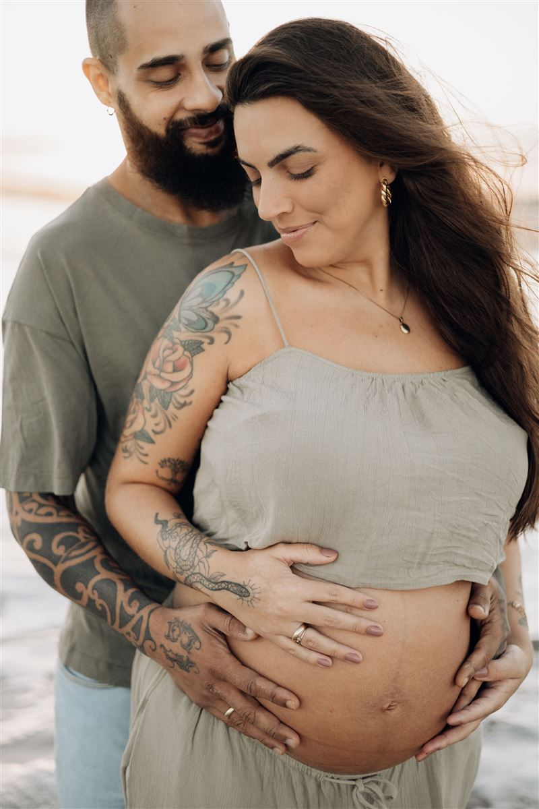
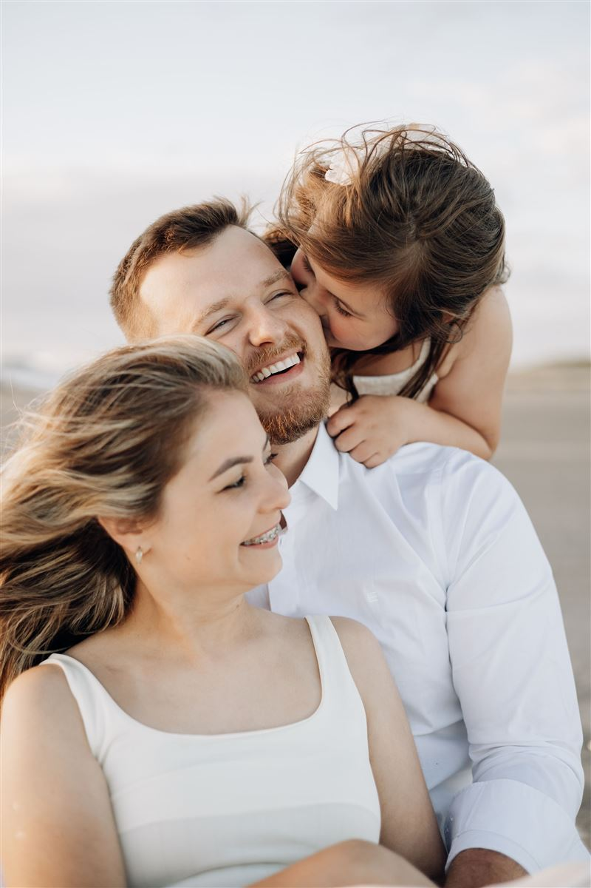
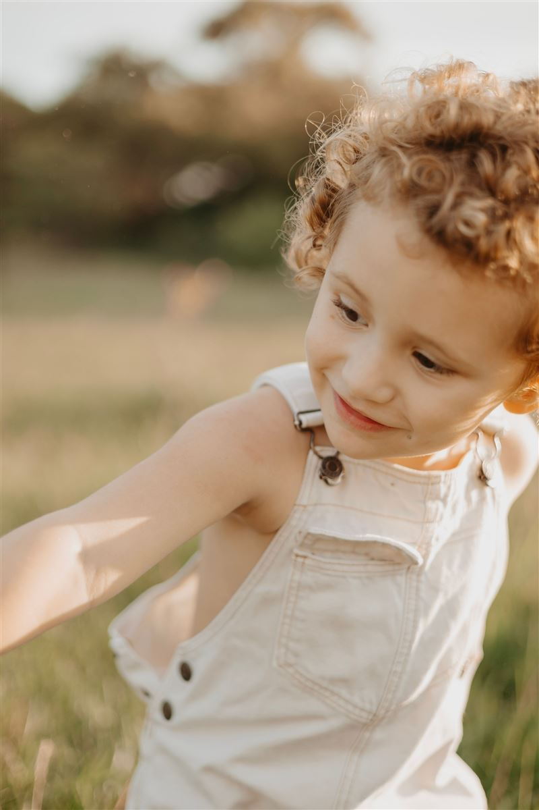
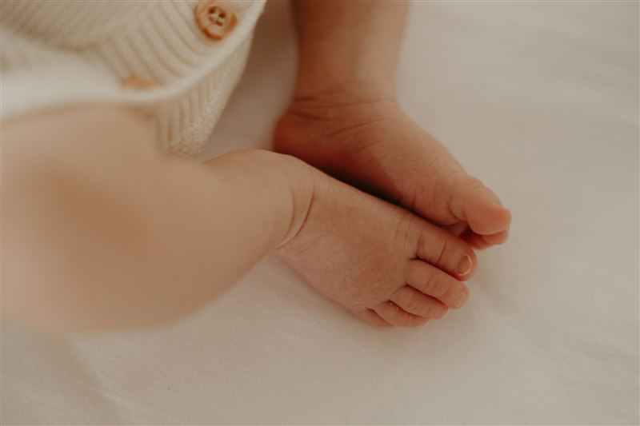
Em movimento
Feito para durar
Do ensaio à caixa que chega na tua casa: fotografias reveladas, álbuns em linho e um cuidado que dá para sentir nas mãos.
Mais no InstagramUma abordagem leve e autoral
Fotografar é permitir que o tempo pare. Sem pressa e com muita leveza, guio nossos encontros para que a tua essência apareça de forma natural. O resultado são retratos que guardam pedaços da tua história, preservados para sempre.
Portfólio
Vamos documentar tudo
Cada foto abre grande. Clique e passe com as setas.

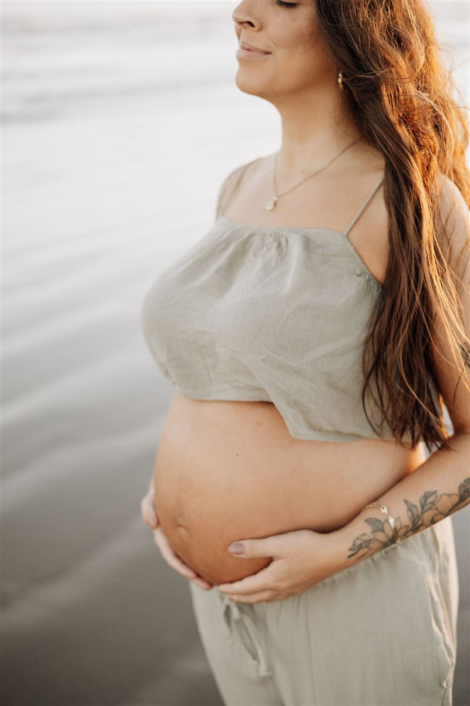
01 — Gestação
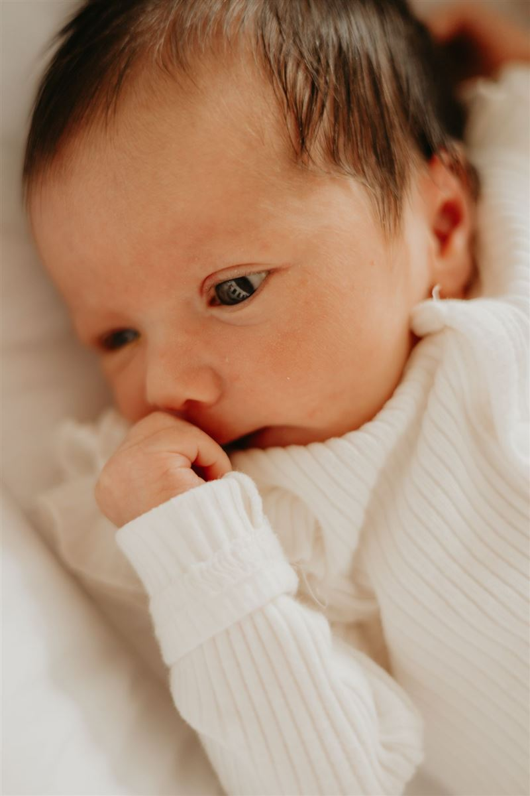
02 — Primeiros dias
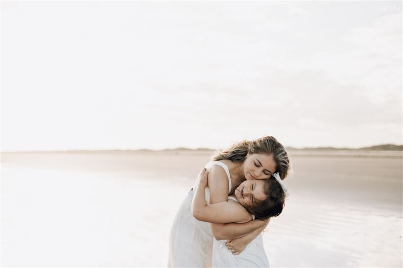
03 — Mãe e filha
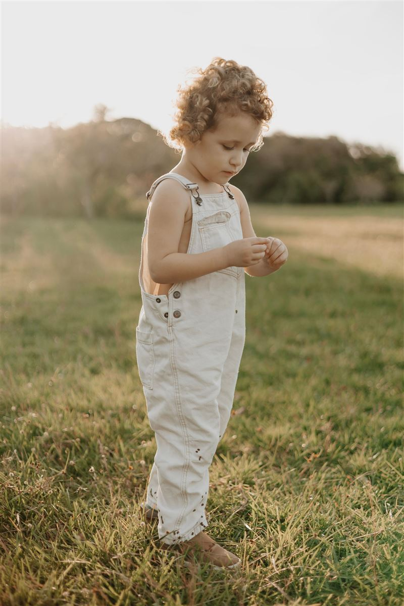
04 — Fases
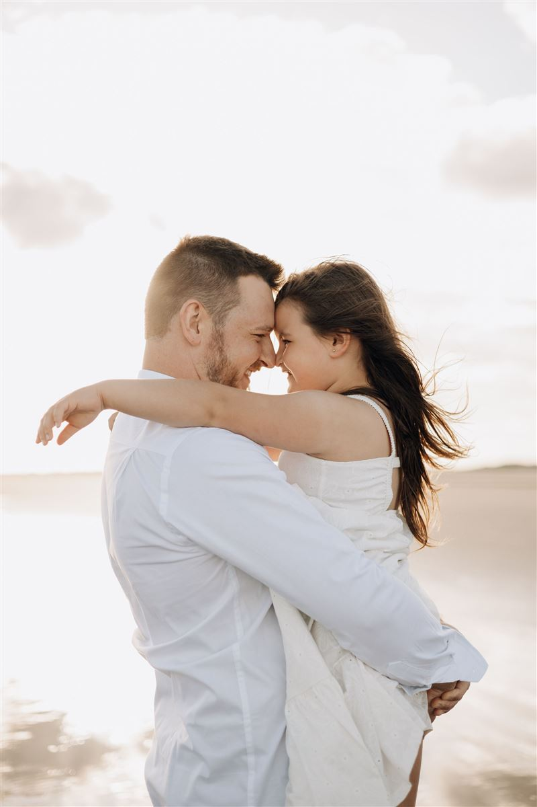
05 — Família
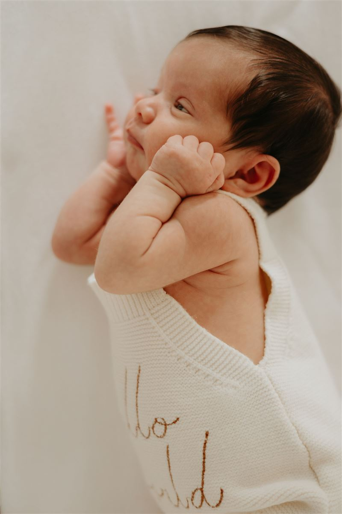
06 — Newborn
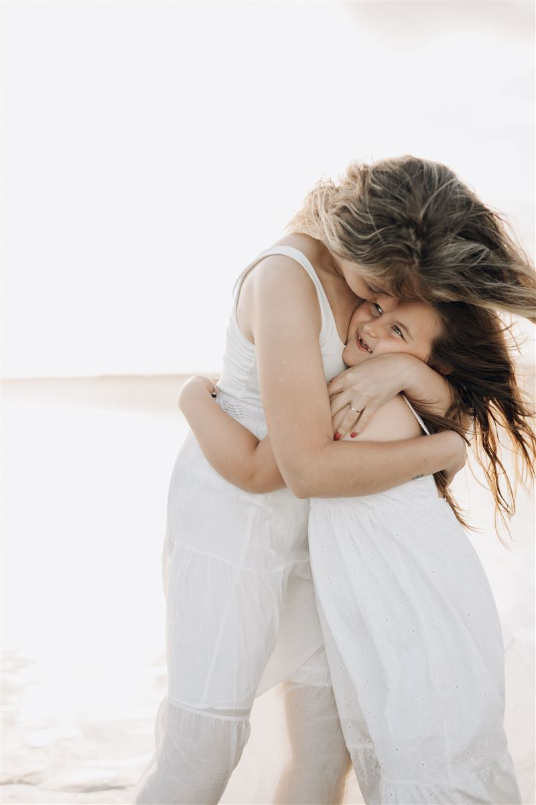
07 — AbraçoO que eu fotografo
Cada fase, um capítulo
- Primeiros dias do bebê
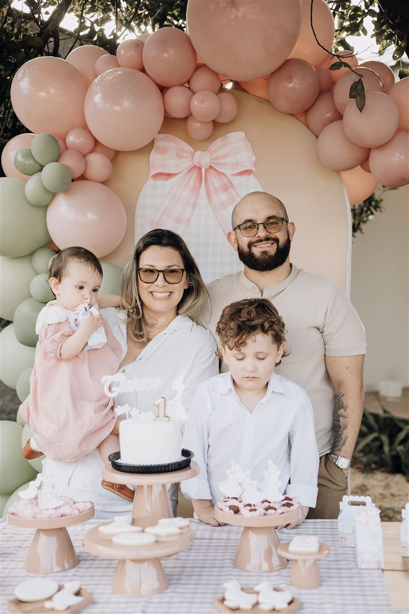
Primeiro aniversário- Gestação
- Fases do bebê
- Momento em família
- Marcos para relembrar
- Em casa ou externa
A vida escreve sua própria poesia. Eu apenas registro o momento em que o sentir acontece.
Sobre a sessão
As fotografias acontecem na tranquilidade da tua casa ou em algum lugar ao ar livre. Nossos encontros duram entre 30 minutos e uma hora e meia, sempre com um ritmo leve, sem poses forçadas e com expressões reais.
Gosto de sugerir roupas em tons claros e neutros, que ajudam a valorizar a beleza natural do momento. Meu objetivo é registrar cada gesto e olhar de forma verdadeira, respeitando a tua história.
“Gratos somos nós com tanto carinho no teu olhar. Esses registros enchem nossos corações. Obrigada por ajudar a contar a história da nossa família.”
Sobre mim
Bárbara Matheus
Sou mãe do Lázaro e da Clarice, esposa, amiga e tantas outras versões que me constroem todos os dias.
A fotografia me encontrou: ganhei minha primeira câmera há mais de 20 anos e, desde então, vi muitas histórias através das lentes, de casamentos a batizados. Há seis anos, transformei essa paixão em profissão e me especializei em retratar famílias, o que realmente aquece meu coração.
Busco, em cada ensaio, traduzir sentimentos em imagens, entregando um olhar único e retratos que nascem do sentir.
- +20
- anos com a câmera
- 6
- anos de profissão
Os pacotes são feitos para construir o registro que faça sentido para o teu momento. Os valores variam conforme tempo dedicado, forma de entrega e profundidade da experiência, sempre respeitando o ritmo da família e o cuidado que cada memória merece.
Podem incluir
- Sessões com duração entre 20 minutos e 1 hora.
- Condução sensível, sem poses forçadas.
- Olhar atento aos gestos, vínculos e detalhes.
- Seleção e tratamento cuidadoso das imagens.
- Entrega digital com qualidade.
- Opções com fotografias reveladas, caixas e álbuns feitos para durar.
Álbuns em linho
Para as famílias que não querem deixar suas histórias guardadas apenas em uma tela, ofereço a experiência completa de transformar fotos em objetos de memória. Nossos álbuns são confeccionados em linho, com um acabamento pensado para durar gerações e ser folheado daqui a muitos anos.
Mais do que contratar um serviço, o convite aqui é para escolher como tu desejas que essa fase da tua vida seja lembrada.
Dúvidas frequentes
Antes de marcar
Onde os ensaios são realizados?
Os ensaios acontecem na casa do cliente, em um espaço aconchegante e cheio de significado. Aproveitamos a luz natural, especialmente das janelas, para criar imagens delicadas e cheias de vida. Ou em locais externos, com a natureza criando a composição.
Preciso ter um espaço grande em casa para fotografar?
Não precisa. O mais importante é a luz natural e o aconchego. Com pequenos cantinhos já conseguimos registros lindos e afetivos.
Fotografa em estúdio ou apenas na casa do cliente?
Atualmente realizo os ensaios na casa das famílias ou em ambientes que façam sentido para vocês.
Que tipo de roupa é melhor usar no ensaio?
Sempre indico roupas confortáveis e em tons claros, neutros e suaves, como bege, branco, off-white e verde clarinho. Assim, a atenção vai toda para a conexão e os detalhes mais importantes: vocês.
Qual a melhor idade para fotografar o bebê?
Cada fase é especial. Mas costumo recomendar o acompanhamento nos 3, 6, 9 e 12 meses, porque são marcos cheios de descobertas e mudanças visíveis.
Quanto tempo demora para receber as fotos?
O prazo de entrega é de até 30 dias para os arquivos digitais e 60 dias para revelações e álbuns.
Como funciona o pagamento e a reserva?
A data é reservada mediante pagamento de sinal, e o restante pode ser organizado de acordo com a forma de pagamento escolhida.
Teu retrato começa aqui
Se sentiu conexão com meu trabalho, este é o primeiro passo. Escreve para mim e vamos planejar juntas o ensaio que vai guardar o que o tempo não apaga.